全国各地 → 长春
抵达长春，安排 24 小时专属接机或接站，入住长春钻级酒店。全天餐食自理，可按抵达时间自由探索城市。
Autumn · Changbai Mountain
从长春到哈尔滨，收藏天池、森林、边境风情与俄式老街。
山湖、驯鹿、俄式小镇与百年老街层层展开，五天旅程兼有辽阔自然与城市人文。

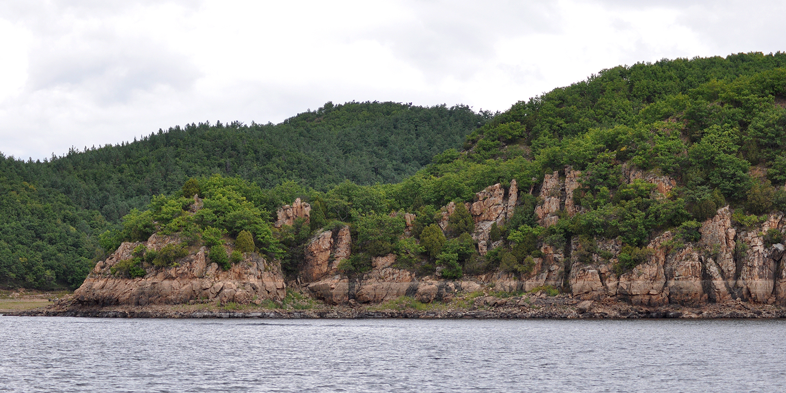
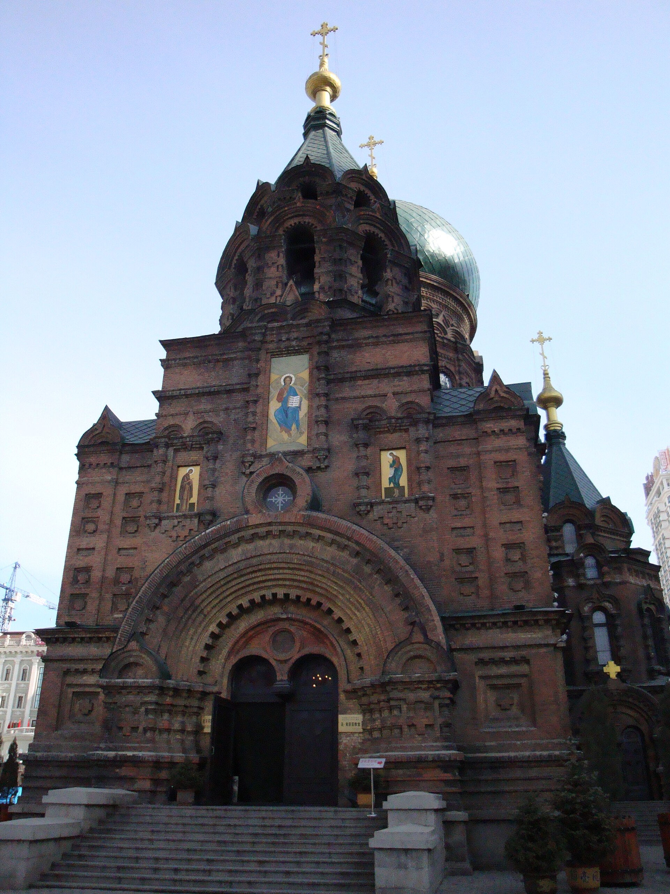
抵达长春，安排 24 小时专属接机或接站，入住长春钻级酒店。全天餐食自理，可按抵达时间自由探索城市。
游览净月潭国家森林公园，前往长白山脚下的二道白河；体验雪绒花驯鹿园，漫步美人松廊桥公园、恩都里与稻米驿站。含早餐。
进入长白山北坡，视天气游览天池，并打卡长白瀑布、聚龙温泉群、绿渊潭等核心景观；傍晚前往延吉网红弹幕墙。含早餐。
逛延吉水上市场早市与朝鲜族民俗园，之后游览镜泊湖吊水楼瀑布、镜泊湖码头；继续前往横道河子俄式小镇，打卡俄罗斯老街、教堂外观与油画村。含早餐。
抵达哈尔滨，打卡圣索菲亚教堂外观、中东铁路网红桥、防洪胜利纪念塔与中央大街，随后统一送团。建议预订 19:00 以后返程交通。含早餐。
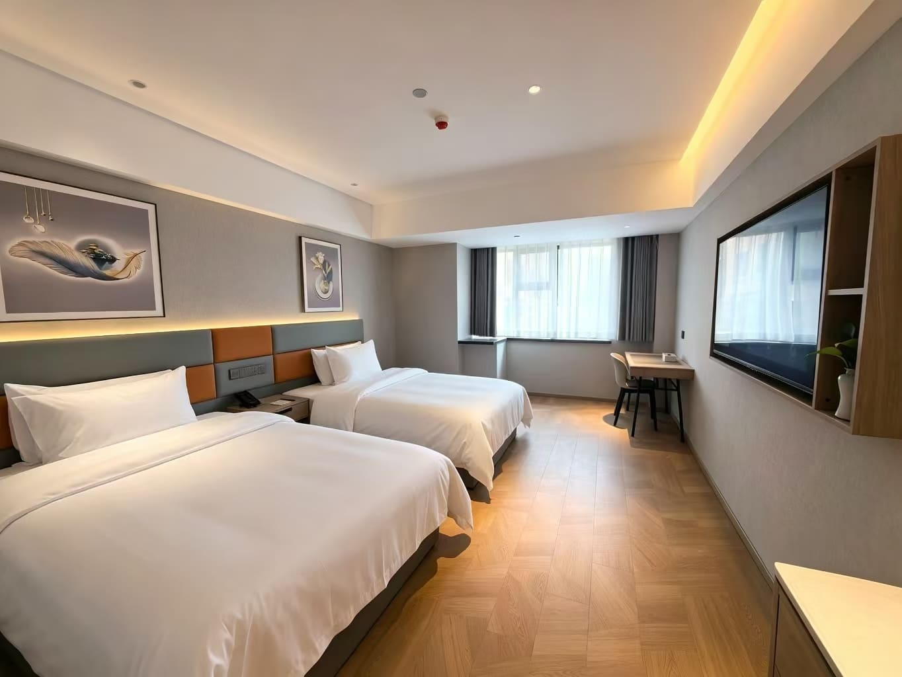
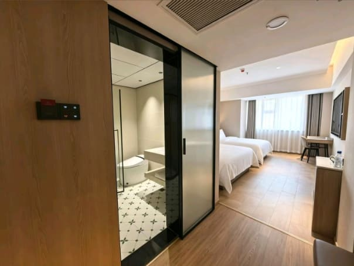
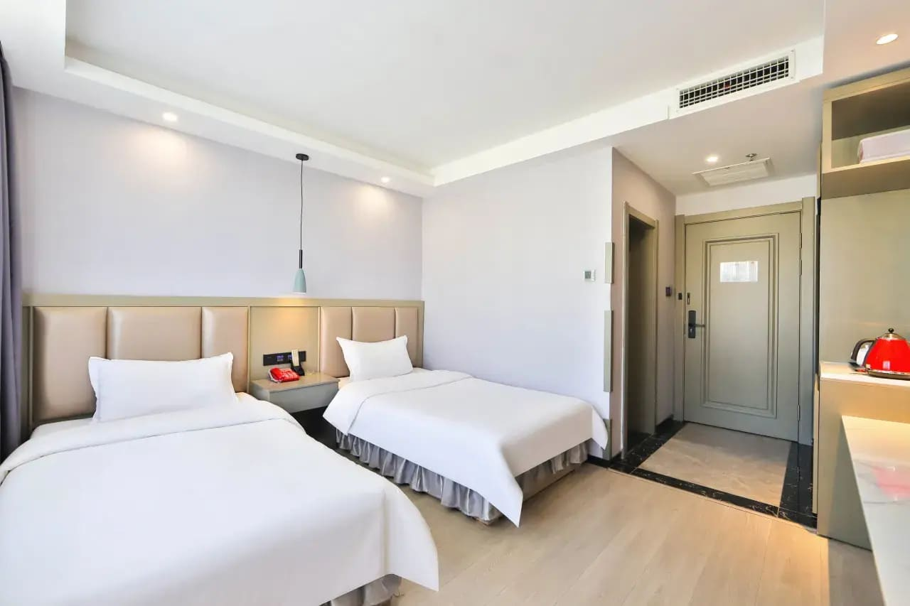

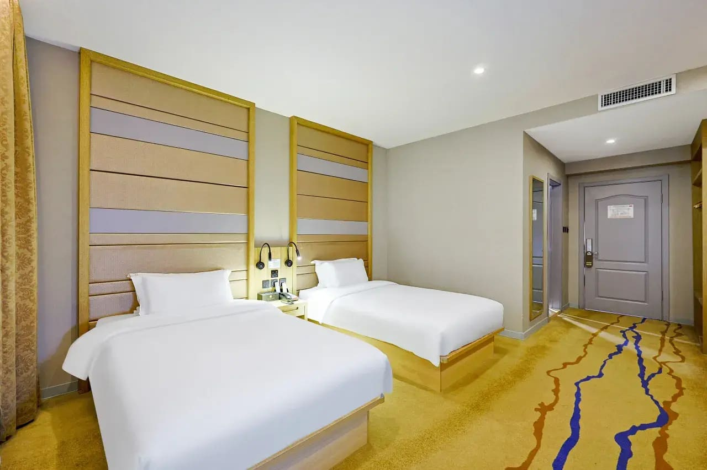
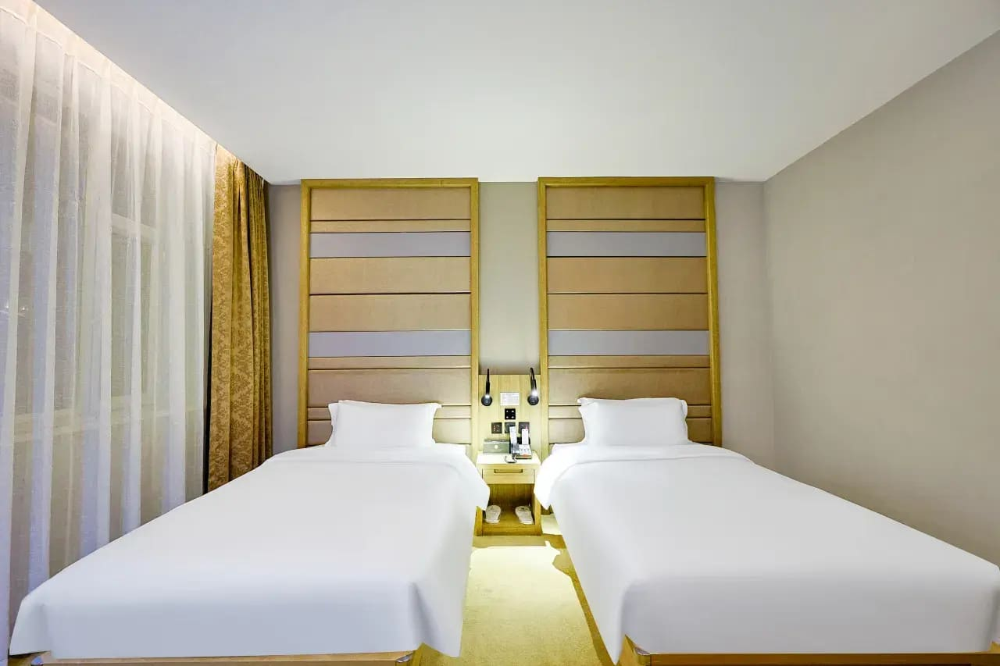
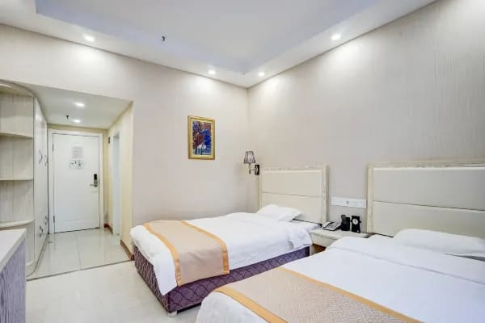
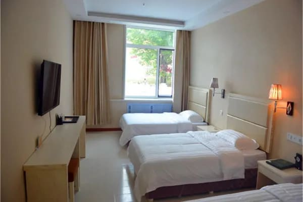
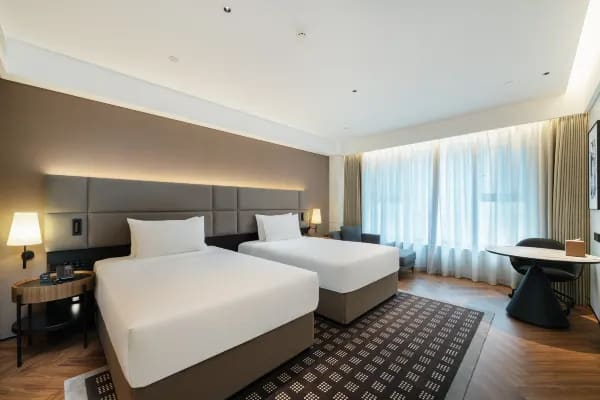
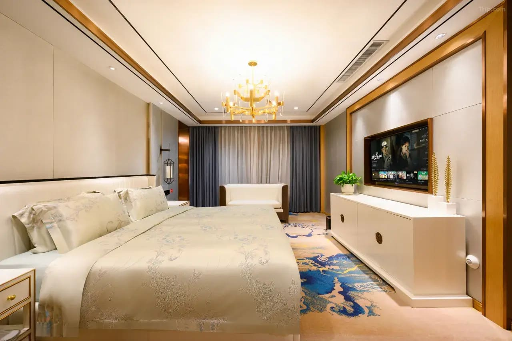
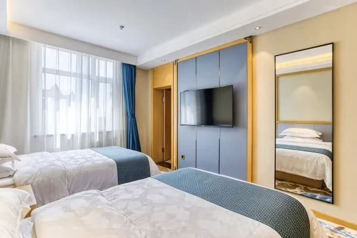
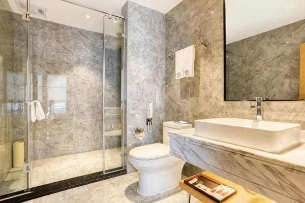
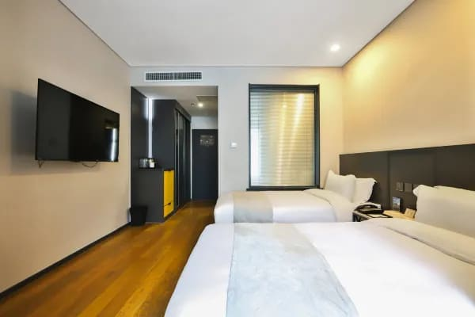
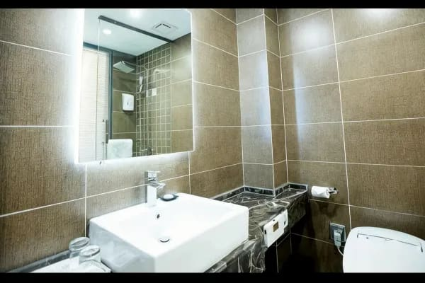
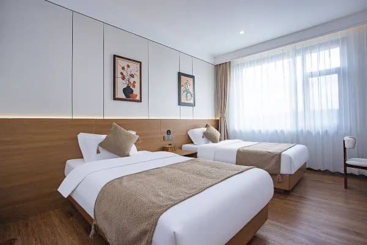
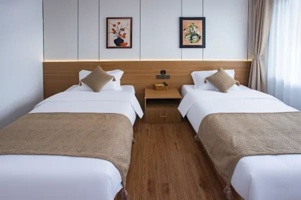
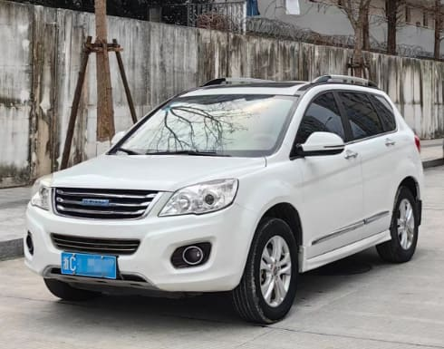
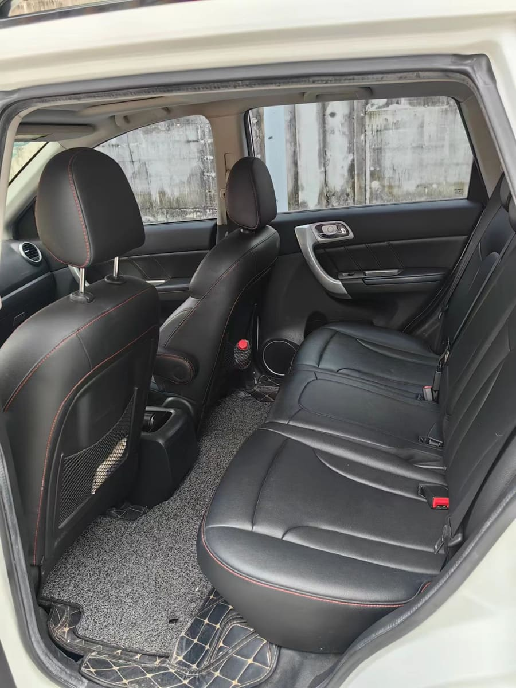

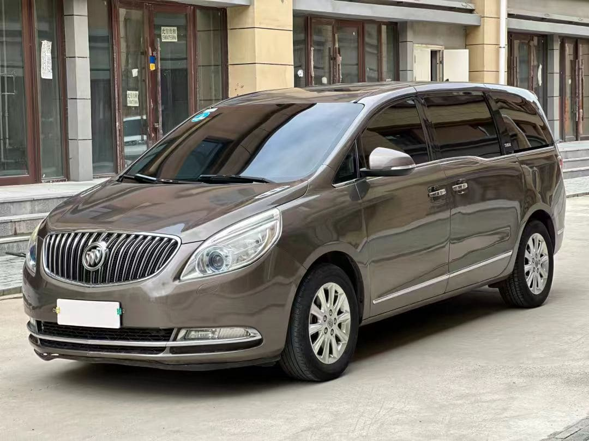
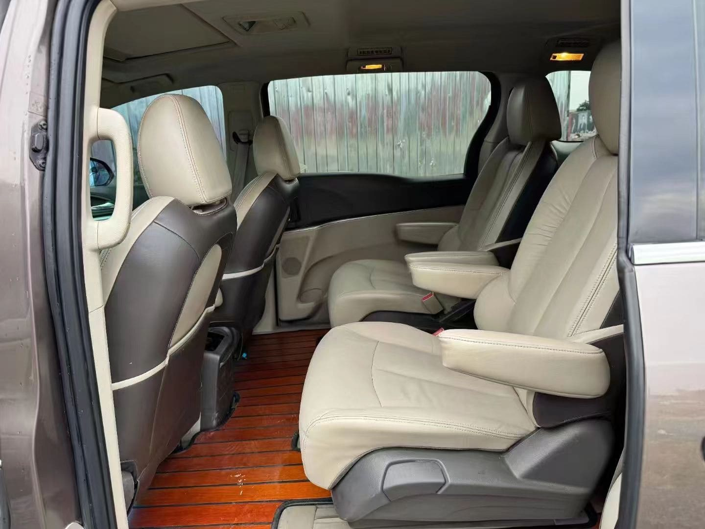


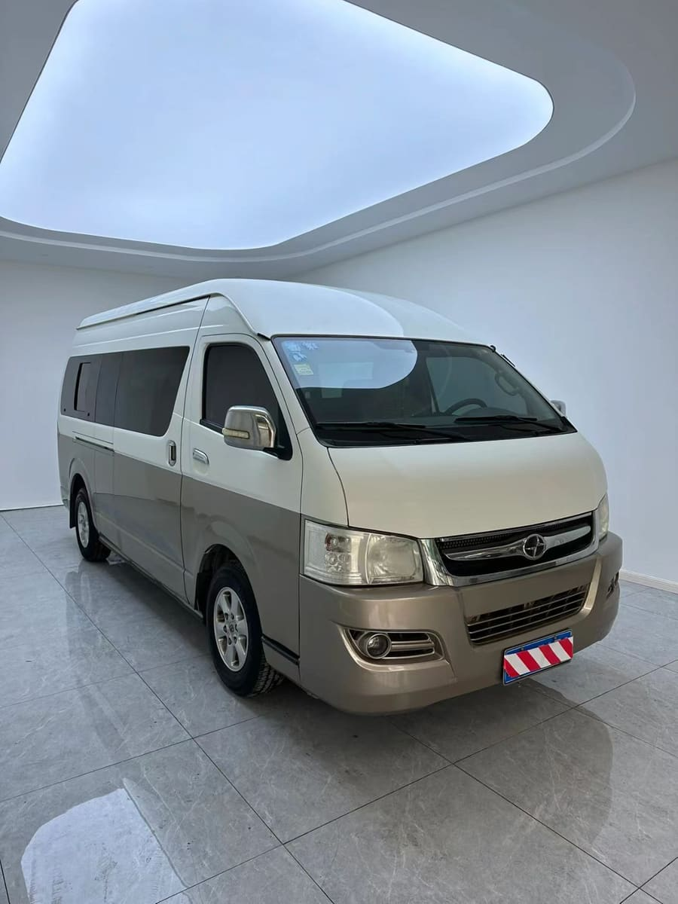
以上均为产品笔记中的住宿与车辆实景参考；酒店、房型和车辆不指定，以出发前确认及当团调度为准。
左右滑动表格，查看完整报价 →
| 出发日期 | 成人 | 儿童 | 单房差 |
|---|---|---|---|
| 8月21日—9月29日 | ¥2480 | ¥1680 | ¥500 |
| 9月30日—10月6日 | ¥2780 | ¥1680 | ¥800 |
左右滑动表格，查看完整报价 →
| 出发日期 | 成人 | 儿童 | 单房差 |
|---|---|---|---|
| 8月21日—9月29日 | ¥2680 | ¥1680 | ¥700 |
| 9月30日—10月6日 | ¥2980 | ¥1680 | ¥1000 |
以上依次对应常规期 / 国庆期，均为每人销售价；儿童不占床、不含早餐。续住价以实际入住日期为准，最终以报名确认单为准。
长春钻级酒店 1 晚、二道白河钻级酒店 1 晚、延吉钻级酒店 1 晚、亚布力或虎峰岭经济型住宿 1 晚。单人入住可能产生单房差。
含酒店早餐 4 次，其余正餐自理。自由选择当地风味，也便于照顾不同饮食习惯。
按实际人数安排车型，团队上限 8 人。司机负责行程衔接、简单讲解与协助，不进入景区陪同讲解。
包含行程所列景区首道门票及景区官方必乘交通；演出、体验项目、景区内非必乘小交通等以现场自愿选择为准。